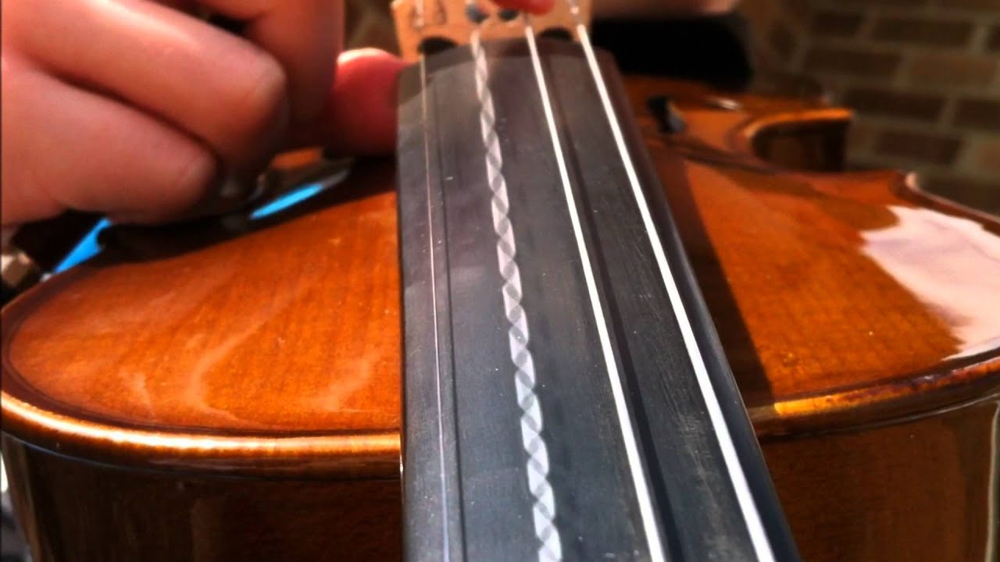
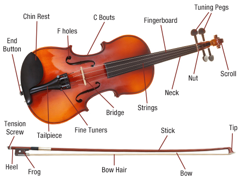
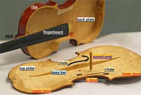

Science Behind the Sound

The violin player creates sound by bowing one or more of the four strings. The bow hairs are rubbed in a sticky
substance called rosin in order to make the strings stick to the bow. The action of the bow on the string causes
the string to undergo a so-called slip-stick motion, in which the string travels with the bow for a time, and then
slips in the other direction before being caught by the bow again a moment later. These oscillations happen many
hundreds of times per second—196 times for the low G, which is the lowest note on the violin in standard tuning, and
into the thousands for very high notes.
The strings themselves move almost no air and consequently produce almost no sound. Their vibrations are
transmitted to the violin body through the bridge, which is a light piece of wood with two feet that stand on
the violin belly. The total tension in the four strings is about 50 pounds, about 20 of which is directed straight
down into the bridge. When a string is bowed, a force is created in the direction of the bow’s motion. As the bow
pulls the string along, the force on the bridge increases in the direction of bowing. When the string slips, the
force reverses direction to be opposite from the bow’s motion. Thus the force transmitted to the bridge takes the
form of a sawtooth wave.

Any such periodic wave can be analyzed as a sum of pure tones, such as what we hear when we strike a tuning fork.
Thus, when a violinist bows a string, he or she not only produces the fundamental pure tone that he or she is
trying to play, but also many harmonics, which are notes with frequencies that are integer multiples of the
fundamental. For example, when a violinist bows "Concert A," which has a fundamental frequency of 440 cycles
per second, the sound you hear contains pure tones of frequency not only 440 cycles per second, but also 880,
1320, 1760, and so on. In the case of the sawtooth wave, the fundamental is twice as strong as the second
harmonic, three times as strong as the third harmonic, and so on.
Underneath the foot of the bridge on the treble side of the instrument is the sound post, which is a thin
cylinder of wood, wedged in between the top and bottom plates of the violin. In addition to supporting the
top plate of the violin and coupling the oscillations of the two plates, the sound post essentially anchors
the treble foot of the bridge to the top plate. The bridge responds to the driving oscillations from the bowed
strings by pivoting about its treble foot, which converts the side-to-side motion of the bow into up-and-down
motion of the violin belly. In addition, at certain higher frequencies the bridge seems to either aid or dampen
out vibrations of the violin body. Despite its apparent simplicity, the role of the bridge in helping the violin
produce sound is still not fully understood.
The top plate has two features that significantly affect the sound output. One—the f-holes—are obvious to anyone
who has ever seen a violin. These s-shaped holes connect the air inside the instrument with the air outside, and
this oscillating air is responsible for the violin’s lowest resonance. A resonance is a frequency at which the
violin naturally tends to vibrate—most of us are familiar with resonances of objects like tuning forks, which,
very soon after being struck, vibrate at one frequency and not any other. The violin’s lowest resonance is very
similar to the noise you hear when you blow air across the mouth of a bottle (or the f-hole itself—try it!), and
tends to fall around 300 cycles per second, near the open D string. The f-holes also play an important role in
separating the area where the bridge stands from the rest of the belly, allowing this area to move much more
easily in response to vibrations from the bridge.

The second feature of the violin’s top plate, which is less obvious because it is on the underside of the plate,
is the bass bar, which serves several purposes—it further strengthens the top plate to withstand the string
pressure; it couples the vibrations of the area between the f-holes, which oscillates relatively freely, to the
more constrained part of top plate closer to the neck; and it prevents energy from being wasted in higher-frequency
vibrations of the body that don’t produce much sound. The sound post and bass bar together break the symmetry of the
violin body, thereby allowing the body to oscillate in different ways than if it were symmetrical, and generally
increasing the sound output of the instrument.
A well-shaped top or bottom plate will naturally resonate in certain “modes.” These can be beautifully illustrated
by placing some sand or other fine particle on the plate and vibrating it at varying frequencies until a mode is
found, at which time the sand accumulates in bands. These bands are called nodes, and the sand moves to them because
they are stationary points on the plate. The other parts of the plate are moving either up or down at a given time.
These patterns are called Chladni nodes after Ernst Chladni, the German physicist who developed the technique of
finding such patterns on vibrating plates. Many such modes exist, but makers concentrate on those at the lowest
frequencies, tuning the plates either by tapping them to hear if they ring, or flexing them by hand.
The acoustics of the assembled violin body are fantastically complex, as they involve coupled oscillations of
the strings, the bridge, the top and bottom plates, the ribs, and the fingerboard. The violin body resonances
do not necessarily fall at the same frequency as the notes the player wishes to play, although the first
(lowest-frequency) body resonance of instruments generally considered of high quality falls near the fundamental
frequency of the open A string, 440 cycles per second. In general, the frequency spectrum of the sound coming
out of the violin body is very different from the spectrum going in. For instance, the violin body has almost
no response at the fundamental frequency of the open G string, which at 196 cycles per second is the lowest
note on the violin in standard tuning. However, many of the harmonics (392, 588, etc) are well represented
in the output spectrum, and, amazingly, the human ear never knows the difference. We think we are hearing
G—a very acoustically rich version of G, but still G. More amazing still, the frequency spectrum of the
sound produced by the instrument can change dramatically with a very slight change in the note being played,
as when a player moves his or her finger on the fingerboard to produce vibrato, and yet the ear hears a
smooth transition between neighboring pitches. As University of Birmingham (UK) physics professor and
concert violinist Colin Gough puts it, "The ear is probably the world's most sophisticated spectrum analyzer."